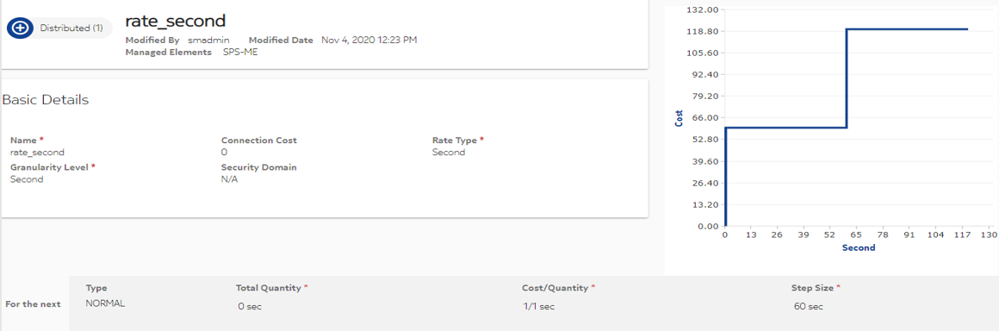
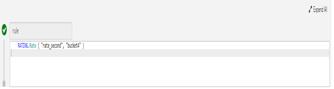
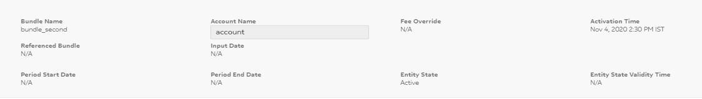

Configuring non-monetary bucket with granularity
The granularity of a non-monetary bucket is based on the rate applicable to that bucket.
Follow the given configuration to enable a non-monetary bucket to be deducted with the granularity defined in its rate:
-
Define a rate with granularity to be applied on the non-monetary bucket.
-
While selecting the non-monetary bucket during tariff configuration, specify that rate as:
Rating.Rate(RateID,Non-Monetary-BucketID)
-
Set the ME application preference GRANULARITY SKIP FOR LOW BALANCE as True.
 Note:
Note:Consider the following points when applying rate to a non-monetary bucket:
-
The initial balance, which is provisioned should not be in decimal.
-
The quantity and cost should be multiple of each other. For example, allowed rate configuration can be 25/50, 30/60, or 50/5; however, 50/80 is not allowed.
-
The Granularity should be divisible by Quantity. For example, if Quantity is set as 60, then Granularity can be 60, 120, or 180, but certainly not 50 or 90.
-
Keep the finite step bucket in multiples of Quantity or multiples of Granularity. For example, if Quantity is set as 60, then the finite step bucket can be 2400 but not 2500.
-
Configure a non-decimal value for Fixed fee for a non-monetary bucket.
-
Tax is not applicable for non-monetary bucket.
Example
Preconditions:
-
Create the following rate object:
 -
Create a charging service object CS_2 having a bucket bucket4 of second type and rate (rate_second) applied to the bucket. The bucket value is 204 seconds.
The charging service has the following tariff configuration:
 -
Create the following bundle:
-
Name: bundle_second
-
Fee: 0
-
Charging Service List: CS_2
-
-
Create an accout and a device object with the following subscription:
 - Set the ME application preference GRANULARITY SKIP FOR LOW BALANCE to
True. For details on configuring ME application preferences, see Managed Elements section in Global Configuration Guide.Note:
Execution:
Execute a single MSCC decentralized IMS call with RG=3300 as follows:
-
CCR(I): RG=3300 : RSU= 30 sec , GSU=60 sec
-
CCR(U1): RG=3300 : RSU= 30 sec , GSU=60 sec
-
CCR(U2): RG=3300 : USU=70 sec, RSU= 80 sec, GSU=110 sec
-
CCR(U3): RG=3300 : USU= 40 sec, RSU= 40 sec, GSU=70 sec
-
CCR(U4): RG=3300:USU= 25 RSU = 20 GSU = 45
-
CCR(T'): RG=3300 : USU=50 sec
Verification: After executing the preceding calls, following points are verified:
-
After executing the CCR(U2) call, the unused bucket value becomes 84 and GSU is calculated as 110.
-
After executing the CCR(U3) call, the unused bucket value remains 84 and GSU is calculated as 70.
-
After executing the CCR(U4) call, the unused bucket value becomes 24 and GSU calculated as 45.
-
After executing the CCR(T') call, the unused bucket value becomes 0.